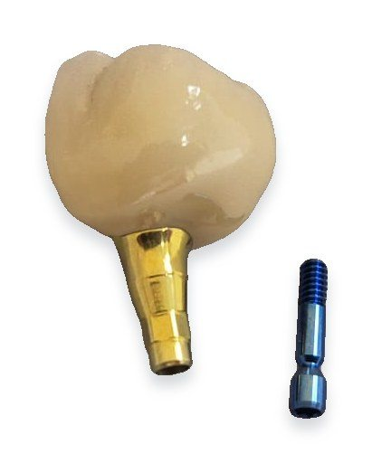
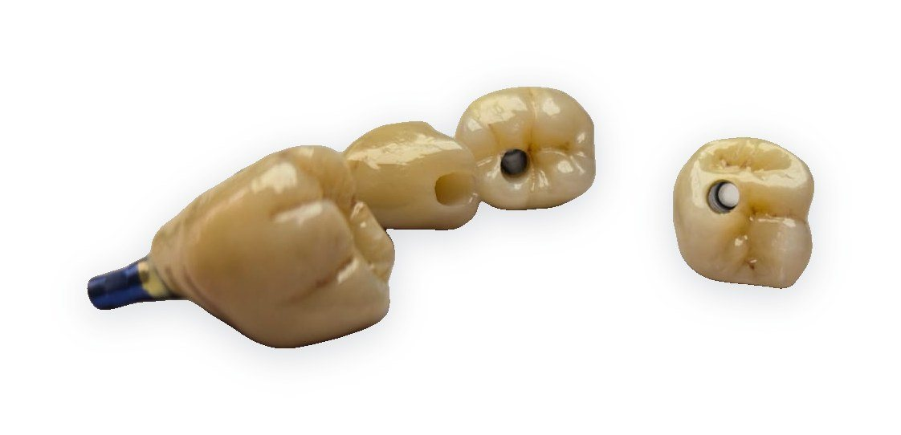

Služba
Implantologická protetika
Šroubované korunky a můstky, individuální abutmenty a hybridní náhrady. Navrženo v CAD, vyfrézováno ze zirkonu a titanu u nás v laboratoři.



Co pro vás vyrobíme
Šroubované korunky
Monolitický zirkon na Ti-bázi, bez cementu v sulku.
Individuální abutmenty
Titanové nebo hybridní zirkon/titan, profil podle gingivy.
Můstky na implantátech
Frézovaná titanová konstrukce s pasivním dosedem.
All-on-4 / All-on-6
Provizorní i definitivní hybridní náhrady.
Podporované systémy
Pracujeme s originálními i kompatibilními Ti-bázemi. Váš systém v seznamu nevidíte? Zavolejte, většinou to vyřešíme.
- [Systém 1]
- [Systém 2]
- [Systém 3]
- [Systém 4]
- [Systém 5]
- [Systém 6]
Dodací lhůty
| Typ práce | Ze STL | Z otisku | Expres |
|---|---|---|---|
| Šroubovaná korunka | [X] prac. dny | [X] prac. dny | [na dotaz] |
| Individuální abutment | [X] prac. dny | [X] prac. dny | [na dotaz] |
| Můstek na implantátech | [X] prac. dnů | [X] prac. dnů | [na dotaz] |
| All-on-4 / 6 definitivní | [X] prac. dnů | [X] prac. dnů | — |
Časté dotazy
V jakém formátu poslat data?
STL z intraorálního skeneru včetně scanbody a protiskusu. Přijímáme i klasické otisky s otiskovacími kapnami.